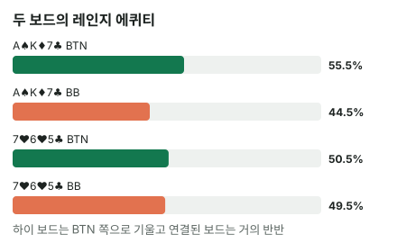

안녕하세요. I06에서 Hero 핸드 하나를 상대 레인지와 붙여 에퀴티를 구했죠.
오늘은 한 걸음 더 가요. 우리 쪽도 핸드 하나가 아니라 레인지 전체로 보고, 두 레인지를 통째로 붙여요. 그러면 "이 보드는 BTN 보드", "이 보드는 BB 보드" 같은 말이 무슨 뜻인지 숫자로 보여요.
이 글에서 배울 것
- 레인지 대 레인지 에퀴티가 무엇이고, 클래스별 에퀴티를 가중 평균해서 어떻게 만들어지는지
- 같은 두 레인지인데 보드가 바뀌면 왜 우위가 옮겨 가는지: "보드에 맞는 핸드가 한쪽 레인지에만 있나"
- 레인지가 앞서도 그 안의 핸드 하나는 전혀 다를 수 있는 이유
오늘의 장면 (가정 레인지)
BTN이 오픈하고 BB가 콜했어요. 두 사람 레인지는 이렇게 가정해요(솔버 결과 아님).
- BTN 오픈: 22+, A2s+, A7o+, K8s+, KTo+, Q9s+, QTo+, J9s+, JTo, T8s+, 98s, 87s, 76s, 65s
- BB 콜: 22-JJ, A2s-AJs, A7o-AJo, K5s-KQs, KTo-KQo, Q8s+, QTo+, J8s+, JTo, T7s+, 97s+, 86s+, 75s+, 64s+, 54s
- BB는 QQ+·AK·AQ를 3벳한다고 보고 콜 레인지에서 뺐어요
두 레인지를 한 줄로 비교하면 이래요. 위쪽(QQ+·AK·AQ)은 BTN에만, 아래쪽 작은 수딧(K5s~K7s, Q8s, J8s, T7s, 97s, 86s, 75s, 64s, 54s)은 BB에만 있어요.
결론부터 말하면, 이 가정에서 BTN은 A♠ K♦ 7♣에서 약 55.6%로 앞서고, 7♥ 6♥ 5♣에서는 약 50.5%로 거의 반반이에요.
1단계. 레인지 대 레인지 에퀴티란?
정의 한 줄
레인지 대 레인지 에퀴티 = 우리 레인지의 콤보와 상대 레인지의 콤보를 가능한 모든 짝으로 붙였을 때, 우리 쪽이 가져가는 팟 몫의 평균이에요. 카드가 겹치는 짝은 뺐어요.
비유: 반 대항 시합
두 반의 반 대항 시합을 떠올리면 돼요. 대표 한 명끼리 붙는 게 아니라, 반 전체가 상대 반 모두와 한 번씩 붙고, 이긴 비율을 반 성적으로 봐요. 우리 반에 에이스가 몇 명 있어도, 나머지가 다 지면 반 성적은 내려가요.
계산은 I06을 여러 번 하는 거예요
먼저 클래스(AKo·AA처럼 같은 이름으로 묶은 콤보 모음)마다 상대 레인지 상대 에퀴티를 구해요. 그리고 그 클래스가 상대와 만드는 짝 수만큼 무게를 줘서 평균을 내요.
BTN 에퀴티 = (클래스 에퀴티 × 그 클래스의 짝 수)의 합 ÷ 전체 짝 수
예를 들어 A♠ K♦ 7♣에서 BTN AA는 남은 A 3장에서 2장을 고르니 3콤보이고, 에퀴티는 약 95%예요. 이 3콤보가 BB 레인지와 붙는 짝 수만큼 평균에 들어가요. 반대로 BTN 22는 6콤보에 약 26.6%라, 평균을 끌어내리는 쪽이에요.
이게 무슨 뜻이냐면, 레인지 에퀴티는 센 핸드가 몇 콤보, 약한 핸드가 몇 콤보냐의 싸움이라는 거예요. 그리고 레인지 에퀴티가 50%보다 높은 쪽을 레인지 우위가 있다고 해요.
2단계. 두 보드 비교
| 보드 | BTN 콤보 | BB 콤보 | BTN 에퀴티 | BB 에퀴티 |
|---|---|---|---|---|
| A♠ K♦ 7♣ | 282 | 286 | 약 55.6% | 약 44.4% |
| 7♥ 6♥ 5♣ | 327 | 311 | 약 50.5% | 약 49.5% |

콤보 수도 보드마다 달라요
보드에 나온 카드는 누구 손에도 없으니, 그 카드가 든 콤보는 빠져요(I32). A·K가 많은 BTN 레인지는 A♠ K♦ 7♣에서 콤보를 더 많이 잃어서 282콤보로 줄었어요. 7♥ 6♥ 5♣에서는 BB 쪽 작은 카드 핸드가 더 많이 빠져요.
3단계. 왜 달라질까? (클래스별 에퀴티)
A♠ K♦ 7♣: 위쪽이 BTN에만 있어요
BB가 3벳으로 뺀 AA·KK·AK·AQ가 BTN 레인지에만 남아요.
- BTN AA 약 95%, KK 약 94.7%, AKo 약 90.9%, AQo 약 82.6%: 이 핸드들은 BB 콜 레인지에 없어요
- 77(셋, 약 93.7%)은 양쪽 레인지에 다 있어서 우위를 가르지 않아요
BB가 이 보드에서 들 수 있는 가장 센 핸드는 셋과 A7s·K7s 같은 투페어 정도예요. BTN은 그 위에 탑셋 두 가지와 AK 투페어까지 가졌죠.
가중 평균으로 한 번 따라가 보기
BTN에만 있는 AA·KK·AK·AQ를 합치면 3 + 3 + 9 + 12 = 27콤보예요. 282콤보 중 일부지만, 이 묶음은 에퀴티가 AQo 약 82.6%에서 AA 약 95% 사이로 모두 높아요.
나머지 대부분은 양쪽 레인지에 다 있는 핸드라, 서로 붙으면 평균이 50% 근처에서 상쇄돼요. 그 위에 이렇게 높은 27콤보가 얹히니 BTN 평균이 50%에서 55.6%까지 올라가는 거예요. 70%가 아니라 55.6%인 건, 이 묶음이 레인지 전체에서 차지하는 콤보 몫이 작기 때문이에요.
7♥ 6♥ 5♣: 아래쪽이 BB에만 있어요
이번엔 BB 콜 레인지에만 있는 낮은 수딧 커넥터가 보드에 맞아요(BB 기준 에퀴티).
- BB 75s 약 78.7%(투페어), 86s 약 68.5%(6 페어 + 양방), 54s 약 67.9%(5 페어 + 양방), 64s 약 65.2%(6 페어 + 양방): 이 넷은 BTN 오픈 레인지에 없어요
- 98s(BB 약 92.3%, 이미 스트레이트)·76s는 양쪽 레인지에 다 있어요
- 반대로 BTN의 KQo는 약 39%, QJo는 약 29.3%로 보드에 거의 안 맞아요
BTN에도 AA·KK 같은 오버페어가 있어서 완전히 밀리지는 않아요. BTN AA의 이 보드 평균이 약 76.9%예요. 그래서 결과가 거의 반반이에요.
한 문장으로
보드에 맞는 핸드가 어느 레인지에 "만" 들어 있는지가 레인지 우위를 정해요. 양쪽에 다 있는 핸드는 서로 상쇄되고, 한쪽에만 있는 핸드가 평균을 기울여요.
왜 그럴까: 프리플랍 선택이 플랍 우위를 미리 정해요
레인지의 모양은 프리플랍에 이미 정해져요
BTN 레인지는 위쪽까지 다 있는 꼭대기가 높은 레인지예요. BB 콜 레인지는 위쪽을 3벳으로 빼서 꼭대기가 잘린 레인지지만, 대신 아래쪽 수딧 핸드가 넓어요.
그래서 높은 카드가 깔리면 꼭대기를 가진 BTN이, 낮고 이어진 카드가 깔리면 아래쪽이 넓은 BB가 웃어요. 플랍이 깔리기 전에 이미 어떤 보드가 누구 편인지 정해져 있는 셈이에요.
같은 두 레인지, 다른 승자
이게 무슨 뜻이냐면, "BTN이 레인지가 넓으니 늘 유리하다"도 "BB가 콜했으니 약하다"도 틀린 말이라는 거예요. 레인지가 얼마나 강한가가 아니라 어떤 모양인가가 보드와 만나서 우위를 만들어요.
우위는 평균이에요
레인지 에퀴티 55.6%는 BTN이 모든 핸드에서 앞선다는 뜻이 아니에요. 같은 A♠ K♦ 7♣에서도 BTN 22는 약 26.6%, 98s는 약 20.2%로 크게 밀려요. 평균이 앞설 뿐, 그 안에는 밀리는 핸드도 섞여 있어요.
자주 하는 실수
실수 1. "BTN은 레인지가 넓으니 어디서나 레인지 우위" 레인지의 넓이를 세기로 착각하는 경우예요. 오늘 7♥ 6♥ 5♣에서 BTN은 약 50.5%로 거의 반반이었어요. BB에만 있는 75s·86s·54s·64s가 보드에 맞았기 때문이죠. 대신 보드를 보고 "여기 맞는 핸드가 누구 레인지에만 있나"를 먼저 물어요.
실수 2. 레인지 우위 = 내 핸드 우위 "이 보드는 BTN 보드니까 내 핸드도 앞서겠지" 하는 경우예요. A♠ K♦ 7♣에서 BTN 레인지는 55.6%지만, BTN 22나 98s는 BB 레인지 상대로 크게 밀려요. 대신 레인지 우위는 레인지 전체의 기준으로, 내 핸드는 따로 계산해요.
실수 3. 콤보 수를 안 보고 핸드 이름만 셈 "BTN에는 AA·KK·AK·AQ가 있으니 엄청 앞서겠다"고 보는 경우예요. A♠ K♦ 7♣에서 이 넷을 합쳐도 27콤보로, 282콤보 중 일부예요. 그래서 BTN 에퀴티는 55.6%에 그쳤죠. 대신 핸드 이름 옆에 콤보 수를 대략 적고 무게를 같이 봐요.
"레인지 우위가 있으면 뭘 할 수 있어요?"
좋은 질문이에요. 레인지 우위는 "이 보드에서 누가 더 자주 벳해도 되는가"를 정하는 출발점이에요.
다만 출발점일 뿐이에요. 실제로 얼마나 자주, 얼마나 크게 벳할지는 넛 우위(가장 센 핸드를 누가 더 많이 가졌나)와 벳 크기까지 봐야 정해져요. 보드마다 c-bet이 어떻게 달라지는지는 E04에서, 넛 우위와 레인지 우위의 차이는 E05에서 다뤄요.
숫자가 뒤집히는 지점
기준은 한쪽 레인지에만 있는 핸드 중 보드에 맞는 몫, 즉 1단계 식에서 그 핸드들의 (클래스 에퀴티 × 짝 수) 합이에요. 콜 레인지에만 있는 핸드가 보드에 맞는 몫이, 3벳으로 빠져 오픈 레인지에만 남은 핸드의 몫보다 커지면 레인지 우위가 콜한 쪽으로 넘어가요.
선생님의 한마디
플랍이 깔리면 우리는 이 순서로 떠올려요.
- 프리플랍에 누가 무엇을 뺐나: 3벳으로 빠진 위쪽 핸드는 누구 레인지에 없나
- 보드에 맞는 핸드 목록: 셋·투페어·스트레이트·강한 드로우를 적어요
- 동그라미 친 핸드마다 콤보 수를 대략 적어요(셋 3, 오버페어 6, 오프수트 두 장 9~12처럼). 개수보다 콤보 무게가 우위를 정해요
연습 문제
학습툴 에퀴티 계산기에는 레인지 입력이 없어서, 문제 2처럼 내 카드 vs 상대 카드와 플랍 3장을 넣어 확인해 보세요. 레인지 대 레인지 숫자는 글쓴이가 따로 계산한 값이에요.
문제 1. 같은 두 레인지로 플랍이 Q♠ J♦ 2♣로 깔렸어요. 오늘 원리로 어느 쪽이 레인지 우위일지 먼저 예측하고, 이유가 되는 핸드를 찾아보세요.
정답 보기
BTN이 약 56.3%로 앞서요(BB 약 43.7%). BB가 3벳으로 뺀 핸드가 BTN에만 있어요.
- 크게 맞는 핸드: QQ(탑셋, 약 93.6%), AA·KK(오버페어, 각 6콤보, 약 82.8%·82.3%), AQ(탑페어 A 키커, AQo 약 82.8%)
- 드로우로 반 넘게 가져가는 핸드: AK(T가 오면 스트레이트인 거트샷 + 오버카드, AKo 약 57%)
JJ(셋)·22(셋)·KQ(탑페어)는 양쪽에 다 있어 서로 상쇄돼요. 콤보로 보면 QQ는 3콤보지만 AA·KK가 합쳐 12콤보라, BTN 우위에는 오버페어 쪽 무게가 더 커요. A♠ K♦ 7♣처럼 A가 깔리지 않아도, BB가 뺀 위쪽 핸드가 보드에 맞으면 BTN 우위가 생겨요.
문제 2. 7♥ 6♥ 5♣에서 Hero(BTN)가 A♠A♣, 상대(BB)가 8♦6♦예요. Hero의 에퀴티는? BTN 레인지 안에서 AA 클래스 평균(약 76.9%)과 비교하면?
정답 보기
약 54.1%(상대 약 45.9%). 나올 수 있는 턴·리버 990가지 중 Hero가 524가지 이기고, 24가지 비기고, 442가지 져요. AA는 앞서지만, 8♦6♦가 6 페어에 양방 스트레이트 드로우(9나 4)까지 있어서 차이가 작아요. AA 평균 약 76.9%보다 훨씬 낮아요. 레인지 평균과 한 핸드의 실제 상대는 이렇게 달라요.
핵심 정리
- 레인지 대 레인지 에퀴티 = 클래스별 에퀴티를 짝 수로 가중 평균한 값. 센 핸드 몇 콤보 대 약한 핸드 몇 콤보의 싸움이에요
- 우위를 가르는 건 한쪽 레인지에만 있는 핸드예요. 양쪽에 다 있는 핸드는 서로 상쇄돼요
- 오픈 레인지는 꼭대기가 높고, 3벳을 뺀 콜 레인지는 꼭대기가 잘린 대신 아래가 넓어요. 그래서 높은 보드와 낮고 이어진 보드에서 우위가 갈려요
- 레인지 우위는 평균이라, 그 안의 핸드 하나는 크게 밀릴 수도 있어요
정리하며
오늘은 같은 BTN 오픈·BB 콜 레인지를 두 보드에 붙여 봤어요. A♠ K♦ 7♣에서는 BB가 3벳으로 뺀 AA·KK·AK·AQ가 BTN에만 있어 BTN이 약 55.6%로 앞섰고, 7♥ 6♥ 5♣에서는 BB에만 있는 낮은 수딧 커넥터가 맞아 거의 반반이 됐죠.
새 플랍을 보면 "여기 맞는 핸드가 누구 레인지에만 있나"를 먼저 떠올리세요.
다음 글 A26에서는 계산에서 잠시 벗어나, 리버 큰 벳에 "블러프 같아서" 콜하는 습관이 왜 손해인지 봐요. 상대 레인지를 밸류와 블러프로 나눠 보는 감각이 그 콜을 어떻게 고치는지 봐요.
AI 작성 · 숫자는 계산 검증 (플랍 뒤 남은 카드를 전부 센 정확값, 콤보 동일 가중, 카드 겹치는 짝 제외) · 가정 레인지 기준 (솔버 결과 아님) · 개념 글(콜/폴드 결정 없음)